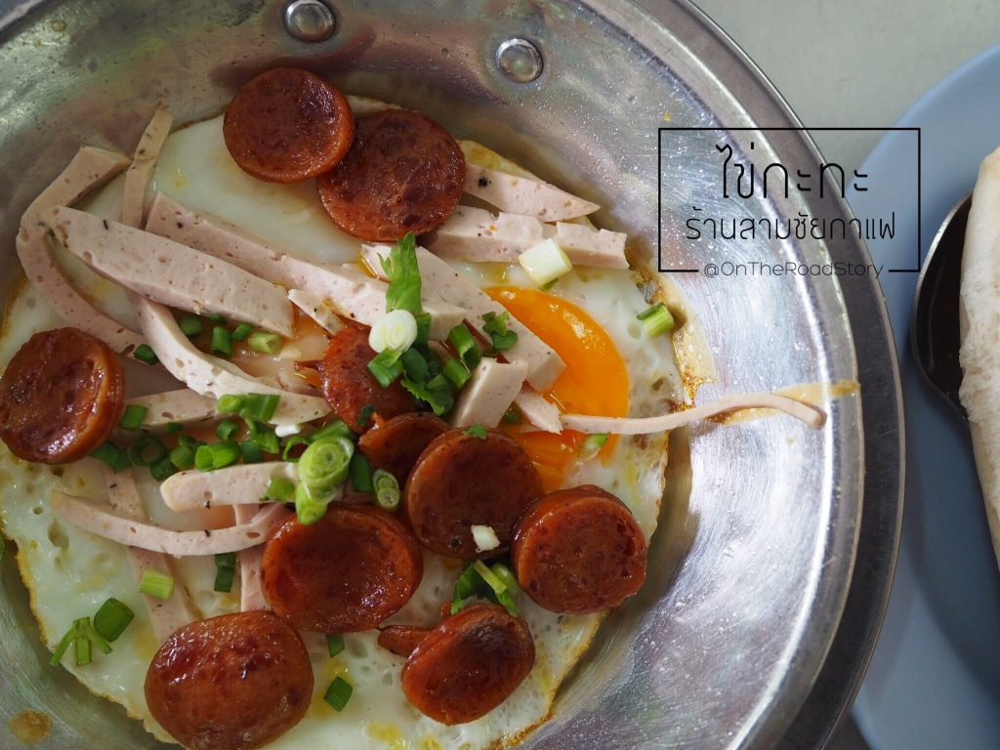
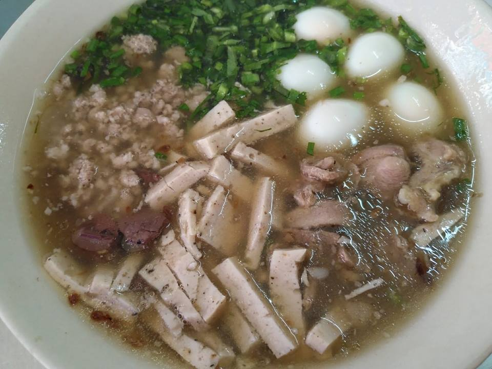

อาหารการกิน

สามชัยกาแฟ
ร้านอาหารเช้าคู่เมืองอุบล มีบริการอาหารเช้าที่หลากหลาย ไม่ว่าจะเป็น กาแฟโบราณ โจ๊ก ไข่กะทะ ข้าวต้ม ต้มเลือดหมู กวยจั๊บ ต้มเลือดหมูใบตำลึง น้ำซุปเข้มข้นหวานน้ำต้มกระดูก ใส่ทั้งหมูชิ้น หมูสับ ตับ และเครื่องในที่ลวกสดใหม่ ไร้กลิ่นคาว กินคู่กับน้ำจิ้มรสเด็ด และข้าวสวยร้อนๆ เปิดทุกวันตั้งแต่เช้า 04.30 - 14.00 น.

ก๋วยจั๊บตาหมี
ก๋วยจั๊บเวียดนาม ร้านตั้งอยู่ถนนยุทธภัณฑ์ ย่านเมืองเก่า น้ำซุปหวานกลมกล่อม ในชามประกอบด้วย หมูยอ หมูสับ เลือด ถ้าต้องการสั่งเพิ่ม มีขาไก่ กระดูกหมู ทาคู่กับปาท่องโก๋ อร่อยจนต้องซ้ำชามที่ 2 เปิดขายตั้งแต่เช้าจนถึงบ่าย สามารถทานเป็นอาหารเช้าและอาหารเที่ยงได้ หน้าร้านไม่มีชื่อป้าย เป็นร้านที่คนอุบลแทบทุกคนรู้จัก เป็นอีกร้านที่ทางเว็บแนะนำให้ไปลองชิม การันตรีจากร้านเปิดมานานหลายสิบปี

ก๋วยจั๊บ 899
ก๋วยจั๊บรสแซ่บ 899 ร้านก๋วยจั๊บที่อร่อยไม่ธรรมดา มีแอร์เย็นสบายไม่คิดค่าแอร์ เพื่อเป็นการขอบคุณลูกค้า ลูกค้าเนืองแน่นทั้งวัน เพราะติดใจในรสชาติของความอร่อย เมนูมีมากมาย เช่น ก๋วยจั๊บกระดูกหมู, ก๋วยจั๊บตีนไก่, ก็วยจั๊บน่องไก่, ก๋วยจั๊บหมูยอ, ก๋วยจั๊บปีกไก่ และก๋วยจั๊บรวมมิตร เปิดขายเวลา 10.00-22.00 น. ทุกวัน